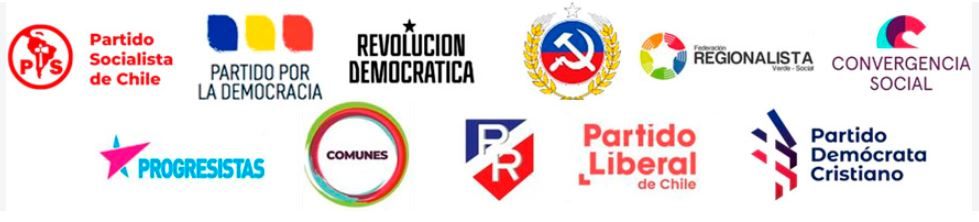

Modernización homeostática: una crítica al texto de Oscar Menares
El texto de Oscar Menares Hernández, "Un Proyecto Modernizador para el Chile del Siglo XXI", ofrece un diagnóstico del estancamiento económico y la vulnerabilidad laboral que afecta a amplios sectores de la población chilena. Sin embargo, su propuesta de una "Modernización Económica Sustantiva" —con rol activo del Estado, Zonas Económicas Especiales e inserción soberana en el Sur Global— presenta contradicciones insalvables que la inscriben, más que en una alternativa al capitalismo, en una operación de actualización de su homeostasis estructural.

Resumen / introducción
El texto de Oscar Menares Hernández, "Un Proyecto Modernizador para el Chile del Siglo XXI", ofrece un diagnóstico del estancamiento económico y la vulnerabilidad laboral que afecta a amplios sectores de la población chilena. Sin embargo, su propuesta de una "Modernización Económica Sustantiva" —con rol activo del Estado, Zonas Económicas Especiales e inserción soberana en el Sur Global— presenta contradicciones insalvables que la inscriben, más que en una alternativa al capitalismo, en una operación de actualización de su homeostasis estructural. Este artículo analiza críticamente los supuestos, omisiones y aporías del proyecto de Menares, mostrando cómo su diagnóstico no conduce a una ruptura con el orden dependiente, sino a una nueva forma de administración de la acumulación capitalista.
1. El diagnóstico: aciertos y límites de la lectura de la crisis
Menares identifica correctamente la crisis estructural de vulnerabilidad laboral que alcanza al 43% de la población activa, y la vincula con fenómenos como la migración masiva, la caída de la natalidad, el deterioro de la salud mental y la crisis de seguridad. También reconoce que los gobiernos progresistas fracasaron en ampliar la "base económica" para sostener sus políticas redistributivas. Este es un diagnóstico lúcido, pero que se detiene en el umbral de la gestión económica y no interroga las relaciones de propiedad. La pregunta que no se formula es: ¿por qué esa base no se amplió? La respuesta es evidente en el texto, aunque no se explicite: porque la izquierda institucional no nacionalizó los recursos estratégicos (cobre, litio, agua), no desprivatizó la banca ni el sistema financiero, y no transformó la matriz productiva. Su "ampliación de la base" fue retórica o limitada a reformas marginales que no alteraron el núcleo del poder económico.
Menares atribuye el estancamiento a una "falta de dinamismo económico", como si el capitalismo dependiente de Chile pudiera ser impulsado mediante incentivos tributarios y cooperación Sur-Sur sin tocar la propiedad de los medios de producción. Esta es una ilusión desarrollista que ignora la naturaleza de la dependencia estructural: el capital extranjero no invierte para desarrollar soberanía, sino para extraer renta. La "trampa de los países de ingreso medio" no se supera con Zonas Económicas Especiales, sino con una ruptura con el capitalismo dependiente.
2. La parálisis táctica: crítica a los bloques, pero sin sujeto revolucionario
La comparación que establece Menares entre una "derecha restauradora" y una "oposición progresista reactiva" es aguda. Señala que la derecha ofrece fórmulas fracasadas y que la izquierda se ha encerrado en disputas valóricas sin un relato alternativo sobre el agotamiento del modelo económico. Pero esta crítica, aunque pertinente, no extrae todas sus consecuencias.
En primer lugar, la derecha chilena no es una excepción local, sino parte de una ofensiva mundial de restauración conservadora que busca disciplinar a la clase trabajadora, desregular la economía y profundizar la explotación. Menares la describe como "arcaica", pero su arcaísmo es funcional a la acumulación global.
La izquierda, por su parte, no ha perdido elecciones por falta de orientación estratégica, sino porque su estrategia real —cuando ha gobernado— ha sido administrar la acumulación de la gran burguesía. El gobierno de Boric traicionó su programa: cumplió con el rol que el sistema le asigna. Un ejemplo elocuente es la creación de leyes policíacas —como la llamada "Ley de Infraestructura Crítica" o el refuerzo de atribuciones a Carabineros y la PDI, Ley Naín-Retamal— que, lejos de abordar la crisis de seguridad desde sus causas estructurales (desigualdad, precariedad, narcotráfico como negocio global), profundizaron el disciplinamiento represivo sobre los sectores populares y el movimiento mapuche. Estas leyes no fueron una concesión táctica; fueron una señal de que la izquierda institucional, una vez en el poder, asume la lógica del capital: gestionar el descontento, desactivar los movimientos populares mediante concesiones tácticas y garantizar que el capital siga reproduciéndose. Esta es la función que el sistema le asigna: legitimar el orden neoliberal con rostro humano.
Menares habla de "construir un sujeto de transformación", pero no define con qué sujeto social, ni cómo se organiza. Su propuesta es estatista y tecnocrática: confía en el Estado y sus tecnócratas, no en la organización de los trabajadores. El 43% de exclusión laboral no se resuelve con "dinamización económica", sino con organización política de los explotados. Sin poder dual, sin asambleas, sin consejos obreros, sin partido de clase, la "modernización" no es más que una nueva forma de dominación.
3. El discurso valórico: identitarismo sin base material
Otro aspecto, es la crítica sobre una "izquierda" encerrada en un discurso reactivo basado en diferencias valóricas y simbolismos, que no dialoga con el agotamiento del modelo económico. Esa crítica es correcta, pero debe ser matizada. Las demandas identitarias —feministas, de diversidad sexual, antirracistas, ambientales— son parte legítima y necesaria de la lucha por una sociedad más justa. No son un error en sí mismas. El problema es que, en la práctica política del progresismo chileno, han sido elevadas a programa central, desplazando las demandas materiales de las mayorías precarizadas. Ese discurso no beneficia a los sectores populares, sino a una pequeña burguesía profesional que obtiene capital simbólico y posiciones de poder, pero que no representa los intereses de quienes sufren la precariedad laboral, la deuda, la falta de vivienda o la crisis de salud pública.
En las elecciones, esa agenda no logró construir una mayoría política, porque el voto popular se define en el terreno de la supervivencia material. La izquierda perdió no porque su comunicación fuera mala, sino porque su programa no interpeló a los sectores precarizados que el propio Menares diagnostica. El identitarismo progresista, al fragmentar la clase trabajadora en nichos identitarios y al priorizar disputas simbólicas por sobre la lucha de clases, ha sido funcional a la desmovilización política. El capital celebra una izquierda que se ocupa de la performatividad legislativa y deja intacta la extracción de plusvalía. Menares lo intuye, pero no se atreve a nombrarlo: el discurso valórico como política central no es un error táctico; es una operación homeostática que el sistema promueve para desviar la lucha de clases hacia el terreno de las diferencias individuales.
4. La ilusión soberana en el Sur Global
Menares lee correctamente el declive del liderazgo occidental y el surgimiento de la multipolaridad, pero comete un error fundamental al pensar que Chile puede insertarse "soberanamente" en ese nuevo orden sin romper con la dependencia imperialista. La Alianza para el Progreso —programa de la administración Kennedy que él menciona— nunca fue una política de desarrollo soberano, sino un instrumento de contrainsurgencia y dominación estadounidense en América Latina, diseñado para frenar el avance de la Revolución Cubana y garantizar la estabilidad de los regímenes aliados al imperio. Evocarla con cierta nostalgia como un precedente de cooperación es un error de lectura histórica.
Hoy, pensar que Chile puede diseñar una apuesta estratégica de desarrollo y relaciones internacionales con soberanía es no entender la situación real del país y la región. Chile está atado por tratados de libre comercio, deuda externa, dependencia tecnológica, control extranjero de recursos estratégicos y un Estado sin capacidad de planificación autónoma. La "inserción soberana en el Sur Global" es una quimera sin una ruptura previa con el imperialismo, sin nacionalización de recursos, sin control obrero de la producción y sin una política exterior independiente. China no es una alternativa desinteresada; es una potencia que busca asegurar materias primas para su acumulación. La cooperación Sur-Sur puede mejorar los términos de intercambio, pero no elimina la relación centro-periferia. La soberanía no se negocia, se conquista.
5. La propuesta: modernización homeostática
El núcleo programático del texto —Zonas Económicas Especiales, incentivos tributarios, propiedad mixta con capitales asiáticos— es una versión actualizada del desarrollismo dependiente. Es una propuesta que el capital puede absorber sin dificultad, porque no cuestiona la propiedad privada ni la extracción de plusvalía. La "modernización económica sustantiva" con rol activo del Estado no es socialismo ni lo parece; es una nueva fachada para la dominación del capital. En China, esas herramientas funcionaron en el contexto de una revolución socialista previa que nacionalizó los medios de producción y rompió con el imperialismo. En Chile, sin esa base, las Zonas Económicas Especiales y los incentivos tributarios son solo una nueva forma de entrega de recursos públicos al capital extranjero.
Menares menciona "una etapa primaria de socialismo", pero esa frase, en el contexto de una propuesta que no toca la propiedad, es un guiño retórico sin contenido estratégico. La "izquierda" neoliberal chilena no necesita más "modernización económica"; necesita reconocer su rol como administradora del capital y romper con él, aportando a construir un poder popular organizado que expropie, planifique y soberanamente decida su inserción internacional. Hasta entonces, cualquier "proyecto de país" será una ilusión funcional al sistema que dice combatir.
Conclusión
El texto de Menares es un diagnóstico útil, pero su propuesta es una operación homeostática que perpetúa la dependencia. La modernización capitalista de estado no es el camino hacia el socialismo, sino una nueva forma de administración de la acumulación. La izquierda chilena debe superar el desarrollismo y el identitarismo, y retomar la senda de la organización de clase, la expropiación de los recursos estratégicos y la construcción de poder popular. Sin eso, cualquier proyecto de país será una ilusión más en el museo de las reformas fracasadas.
1 Para revisar el concepto "Homeostasis estructural del Capital" ver "Lenin: la persistencia del Materialismo Dialéctico. Homeostasis estructural del capital" de John Zieballe Vilche — Amazon edición Kindle: https://a.co/d/02VYpzbv